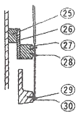
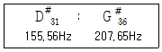
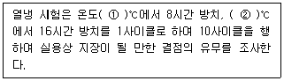

피아노조율기능사 (2007-01-28 기출문제)
1과목: 임의 구분
1. 일반적인 피아노 해머의 중량은 어느 정도인가?
- 저음 10g, 최고음 6g
- 저음 12g, 최고음 8g
- 저음 14g, 최고음 10g
- 저음 16g, 최고음 12g
(정답률: 알수없음)

2. 피안에서 크라우닝(crowning)에 대하여 가장 옳게 설명한 것은?
- 브리지의 높이를 말한다.
- 프레임의 휜 정도를 말한다.
- 향판의 음향 전달 정도를 말한다.
- 향판의 배부름 현상을 말한다.
(정답률: 알수없음)
3. 피아노 건반의 상승하중(N)은 어느 정도인가?
- 0.010 ~ 0.084
- 0.098 ~ 0.39
- 0.39 ~ 074
- 0.76 ~ 0.92
(정답률: 알수없음)
4. 링브리지(ring bridge)에 대한 설명 중 맞는 것은?
- 중고음부와 저음부의 떨어진 상태를 말한다.
- 중고음부의 둥근 브리지를 말한다.
- 급속연속 타현장치를 말한다.
- 저음부와 중고음부의 연결된 브리지를 말한다.
(정답률: 알수없음)
5. 피아노 구조에 대한 설명 중 옳지 않은 것은?
- 향판은 활모양으로 성형되어야 하며 주변은 견고하게 부착되어야 한다.
- 향봉은 원칙적으로 향판의 나뭇결 방향과 같도록 접착되어야 한다.
- 브리지는 향판 면에 확실히 접착되어야 한다.
- 브리지핀은 현이 브리지에 밀착될 수 있도록 경사져 있어야 한다.
(정답률: 알수없음)
6. 목골(Wood frame)에 대한 설명 중 틀린 것은?
- 철골과 상관없이 5~10톤의 장력 대부분을 지탱하는 역할을 하며, 그랜드와 업라이트의 목골구조는 거의 같다.
- 일반적으로 업라이트피아노의 몪로은 상횡목, 하횡목 지주로 구성되어 있다.
- 업라이트피아노의 경우 상횡목은 핀판과 접착되어 있다.
- 목골은 피아노의 틀을 유지하는 기본이 된다.
(정답률: 알수없음)
7. 피아노 16번 선의 지름(mm)과 인장강도(N/mm2)를 옳게 나타낸 것은?
- 지름 : 0.850 + 0.010, 인장강도 : 2340 ~ 2500
- 지름 : 0.925 + 0.010, 인장강도 : 2340 ~ 2500
- 지름 : 0.850 + 0.010, 인장강도 : 2370 ~ 2550
- 지름 : 0.925 + 0.010, 인장강도 : 2370 ~ 2550
(정답률: 알수없음)
8. 피아노 선 1종(PW-1)의 적용 선지름(mm)을 옳게 나타낸 것은?
- 0.06 이상, 8.0 이하
- 0.08 이상, 10.0 이하
- 0.10 이상, 12.0 이하
- 1.00 이상, 14.0 이하
(정답률: 알수없음)
9. 피아노에서 트랩워크(trap work)란 무엇인가?
- 페달의 운동이 페달레버와 페달봉을 통해 액션으로 옮겨지는데 페달부터 액션에 이르는 장치
- 라우드 페달과 쉬프트 페달을 동시에 사용할 때 두 페달 간의 상하 이동거리
- 라우드 페달을 밟았을 때 댐퍼의 전체 동작거리
- 쉬프트 페달을 밟았을 때 액션의 이동거리
(정답률: 알수없음)
10. 다음 피아노 구조 중 25번의 명칭은 무엇인가?

- 저음 브리지
- 좌판 발
- 베어링 받침
- 뒤판
(정답률: 알수없음)
11. 흡음처리에 대한 설명 중 틀린 것은?
- 에코를 방지하기 위해 꼭 흡음처리를 해야 할 경우 흡음율을 미리 정한다.
- 확성장치 때문에 마이크를 사용할 경우 그 주변을 되도록 흡음성이로 한다.
- 일반적으로 낮은 주파수는 흡음율이 크고 고음역에서는 흡음율이 작다.
- 같은 재질일 경우 흡음재료가 두꺼워질수록 음의 흡수가 잘 된다.
(정답률: 알수없음)
12. 소리의 3요소와 가장 관계 깊은 것은?
- 순음, 소음, 복합음
- 세기, 높이, 맵시
- 음량, 음향, 음색
- 리듬, 멜로디, 하모니
(정답률: 알수없음)
13. 다음 중 어울림 음정이 아닌 것은?
- 단3도
- 장3도
- 장7도
- 완전5도
(정답률: 알수없음)
14. 소리의 주파수가 4186Hz 일 때 파장은? (단, 음속은 340m/s 이다.)
- 6.73 cm
- 8.12 cm
- 10.51 cm
- 12.31 cm
(정답률: 알수없음)
15. 다음 중 일정한 음의 강도에서 사람이 가장 잘 들을 수 있는 주파수(Hz)는?
- 30
- 300
- 3000
- 30000
(정답률: 100%)
16. 바이올린(Violin)가 피아노(Piano)의 음을 듣고 두 악기를 구별할 수 있는 가장 큰 이유는?
- 음 셈여림의 차이
- 음 높낮이의 차이
- 음색의 차이
- 음 장단(길고 짧음)의 차이
(정답률: 알수없음)
17. 주파수에 대한 설명 중 옳은 것은?
- 주파수는 현의 길이에 비례한다.
- 주파수는 현의 지름에 비례한다.
- 주파수는 현의 밀도의 제곱근에 반비례한다.
- 주파수는 현의 장력의 제곱근에 반비례한다.
(정답률: 50%)
18. 완전4도와 완전5도에 대한 센트를 비교할 때, 순정율과 비교하여 평균율은 어떠한가?
- 4도는 넓고, 5도는 좁다.
- 4도, 5도 모두 넓다.
- 4도는 좁고, 5도는 넓다.
- 4도, 5도 모두 좁다.
(정답률: 알수없음)
19. 장3도와 장6도에 대한 각각의 음정비를 옳게 나타낸 것은?
- 장3도 2 : 1, 장6도 1 : 1
- 장3도 3 : 2, 장6도 2 : 1
- 장3도 4 : 5, 장6도 3 : 5
- 장3도 5 : 4, 장6도 4 : 5
(정답률: 알수없음)
20. A37가 220Hz 일 경우 장3도 위의 C#41(277.183Hz)와의 맥놀이는 매 초당 몇 회인가?
- 5.9
- 6.5
- 7.8
- 8.7
(정답률: 알수없음)
2과목: 임의 구분
21. 다음 두 음 간의 맥놀이는 매 초당 몇 회인가?

- 0.071
- 0.71
- 7.10
- 71.0
(정답률: 알수없음)
22. 순정5도를 12번 겹쳐서 만들어지는 양과 기음에서 직접 취한 7옥타브의 양과의 사이에 생기는 근소한 차를 말하는 것으로 피타고라스 콤마(comma)라고도 하는게 그 차는 어느 정도인가?
- 약 24센트
- 약 29센트
- 약 34센트
- 약 39센트
(정답률: 알수없음)
23. 순정율에서 완전5도는 대전음, 소전음, 반음이 몇 개로 이루어지는가?
- 대전음 1개, 소전음 2개, 반음 1개
- 대전음 2개, 소전음 1개, 반음 1개
- 대전음 1개, 소전음 1개, 반음 2개
- 대전음 2개, 소전음 2개, 반음 1개
(정답률: 알수없음)
24. 음의 높낮이를 시각적, 미적으로 연속 배열한 것을 무엇이라고 하는가?
- 하모니
- 가청역
- 복합음
- 멜로디
(정답률: 알수없음)
25. 연주용 피아노 조율시 유의사항으로 옳지 않은 것은?
- 피치 변경은 적어도 연주 전날 행한다.
- 연주 직전 조정, 정음은 피한다.
- 당일 조율은 특별히 정성들여 행하고 테스트블로우는 평소보다 약하게 해야 한다.
- 가능한 연주 전날 조율을 미리 해 둔다.
(정답률: 알수없음)
26. 단7도 검사에 가장 많이 사용되는 음역은?
- 최고음부
- 차고음부에서 최고음부까지
- 최저음부
- 중음부에서 최저음부까지
(정답률: 알수없음)
27. 순전율에서 장6도는 몇 센트인가?
- 386 센트
- 400 센트
- 884 센트
- 900 센트
(정답률: 알수없음)
28. 다음 중 불안전 협화음정이 아닌 것은?
- 장3도
- 완전1도
- 장6도
- 단6도
(정답률: 알수없음)
29. 주요 3화음을 구성하는 음이름이 아닌 것은? (단, 다장조 음계 기준이다.)
- 도, 미, 솔
- 미, 솔, 시
- 파, 라, 도
- 솔, 시, 레
(정답률: 알수없음)
30. 등감곡선에서 1000Hz 순음의 음압 레벨이 65dB 일 때 몇 폰에 해당되는가?
- 0.065
- 65
- 650
- 65000
(정답률: 알수없음)
31. 사람의 귀의 구조 중 마이크로폰의 진동핀과 같은 역할을 하며 음파를 기계적인 진동으로 바꿔주는 기능을 하는 것은?
- 세반고리관
- 청소골
- 고막
- 달펭이관
(정답률: 알수없음)
32. 피타고라스 온음과 림마와의 차를 무엇이라고 하는가?
- 메르센느
- 디뒤머스콤마
- 신토닉콤마
- 아포토메
(정답률: 알수없음)
33. 피치가 많이 내려간 피아노를 조율할 때 가장 좋은 방법은?
- 440 Hz로 한 번에 조율한다.
- 10 ~ 20센트 높여서 1, 2차 조율한다.
- 440 Hz 로 반드시 두 번 조율한다.
- 10센트 낮춰서 조율한다.
(정답률: 알수없음)
34. 평행한 벽면사이를 음파가 여러 차례 왕복하여 거의 같은 크기의 반향이 다수 연속적으로 일어나는 현상을 무엇이라고 하는가?
- 잔향(reverberation)
- 마스킹 효과(masking effect)
- 양이 효과(binaural effect)
- 영룡(flutter echo)
(정답률: 알수없음)
35. 음원에서 소리의 발생이 중지된 뒤에도 소리가 남아있는 현상을 무엇이라고 하는가?
- 음의 양이효과
- 음의 반사
- 음의 흡수
- 음의 잔향
(정답률: 알수없음)
36. 건반 동작검사를 할 때 건반을 10mm 정도 들었다가 놓아 주면 어떤 상태가 될 때 가장 정상인가?
- 건반이 자체 중량으로 부드럽게 내려가야 한다.
- 건반이 자체 중량으로 아주 빠른 속도로 내려가야 한다.
- 거반이 내려가지 말아야 한다.
- 건반을 손으로 살며시 눌러 주었을 때만 내려가야 한다.
(정답률: 알수없음)
37. 피아노에 사용하는 목재의 함수율은 몇 %가 가장 적합한가?
- 1 ~ 2%
- 3 ~ 14%
- 15 ~ 30%
- 31 ~ 50%
(정답률: 알수없음)
38. 건반 수평고르기를 하는 가장 주된 이유는?
- 건반 무게가 달라지기 때문이다.
- 균일한 터치를 만드는데 필요하기 때문이다.
- 건반이 고르지 않으면 건반이 휘어지기 때문이다.
- 건반 수평고르기를 해야 해머가 작동하기 때문이다.
(정답률: 알수없음)
39. 건반 고르기 중 높이를 전체적으로 높이려면 어떻게 하는 것이 가장 바람직한가?
- 바란스레일 밑에 종이를 알맞게 고인다.
- 후론트레일 밑에 종이를 알맞게 고인다.
- 백레일 밑에 종이를 알맞게 고인다.
- 종이 펀칭을 건반 하나하나마다 고인다.
(정답률: 알수없음)
40. 다음 중에서 건반동작 검사를 할 때 가장 바람직한 방법은?
- 건압대를 눌러서 검사한다.
- 건반을 눌러서 들어가는 깊이를 보고 검사한다.
- 페달을 밟은 상태에서 건반을 살며시 눌렀다 놓으면서 검사한다.
- 열쇠봉이 앞건반에 닿게 검사한다.
(정답률: 알수없음)
3과목: 임의 구분
41. 위펜힐 클로스가 마모되었을 때 수리하는 방법 중 가장 옳은 것은?
- 클로스 전면에 묽은 접착제를 충분히 도포하여 붙여준다.
- 위펜힐에는 클로스가 아닌 펠트를 사용하여야 한다.
- 업라이트 위펜힐에는 스킨이나 가죽을 사용한다.
- 클로스 양단에 접착제를 칠하여 붙여 준다.
(정답률: 알수없음)
42. 타현거리 조정에 대한 설명 중 옳은 것은?
- 타현거리는 28~38mm가 표준이다.
- 타현거리는 액션볼트의 길이를 변경하여도 변하지 않는다.
- 타현거리는 해머레일의 전후를 조정하더라도 변하지 않으며, 주로 앞브리지를 기준으로 잰다.
- 타현거리를 재는 방법은 현의 타현점 중앙과 해머헤드의 타현점 중앙을 잰다.
(정답률: 알수없음)
43. 피아노의 내구성 시험을 할 때의 온도로 가장 적합한 것은?
- 15±5℃
- 25±5℃
- 35±5℃
- 45±5℃
(정답률: 알수없음)
44. 브라이들 테이프와 백첵 와이어의 간격은 어느 정도가 가장 적당한가?
- 1.5mm
- 3mm
- 4.5mm
- 6mm
(정답률: 알수없음)
45. 에프터 터치의 양에 대한 설명 중 옳은 것은?
- 건반 깊이와 타현거리에 비례한다.
- 건반 깊이와 타현거리에 반비례한다.
- 건반 깊이에 반비례하고 타현거리에 비례한다.
- 건반 깊이에 비례하고 타현거리에 반비례한다.
(정답률: 알수없음)
46. 댐퍼수준 조정은 건반을 눌러서 해머가 몇 mm 정도 진행했을 때 댐퍼가 뜨기 시작해야 하는가? (단, 중형 피아노인 경우이다.)
- 7 ± 2mm
- 20 ± 2mm
- 27 ± 2mm
- 34 ± 2mm
(정답률: 알수없음)
47. 댐퍼페달의 로스트 모션(lost motion) 조정은 어떻게 하는 것이 가장 적합한가?
- 페달봉과 댐퍼로드가 맞닿는 간격을 2mm를 둔다.
- 페달봉과 댐퍼로드가 맞닿는 간격을 6mm를 둔다.
- 페달봉과 댐퍼로드가 맞닿는 간격을 8mm를 둔다.
- 페달봉과 댐퍼로드가 맞닿는 간격을 10mm를 둔다.
(정답률: 알수없음)
48. 업라이트 피아노에서 연타가 되지 않는 원인으로 볼 수 없는 것은?
- 건반 깊이가 얕아서
- 잭 동작이 둔해서
- 받드 센터핀이 빡빡해서
- 위펜 센터핀이 빡빡해서
(정답률: 80%)
49. 업라이트 피아노 해머헤드가 사진행 할 때 가장 바람직한 수리방법은?
- 플랜지가 레일에 접착하는 반대쪽을 깎는다.
- 사진행하는 반대쪽에 적당한 종이를 고인다.
- 받드 플랜지 스크류를 약간 늦추어 놓는다.
- 받드 플랜지 옆을 깎아 놓는다.
(정답률: 알수없음)
50. 타현점이 많이 마모된 해머헤드의 파일링(filing)하는 방법 중 옳은 것은?
- 고음부분은 둥글게 저음부분은 뽀족하게 깎아야 한다.
- 페이퍼의 진행방향은 중심점으로부터 위에서 아래로 진행한다.
- 해머헤드의 양면을 계란형으로 연마하고 마지막에 헤드의 앞부분을 연마한다.
- 타현점의 자국을 완전히 없앤 후 옆부분을 연마한다.
(정답률: 알수없음)
51. 다음은 피아노 액션의 열냉 시험에 관한 내용이다. ( ) 안에 알맞은 것은?

- ① -20±5, ② -50±5
- ① -20±5, ② 50±5
- ① 20±5, ② 50±5
- ① 20±5, ② -50±5
(정답률: 알수없음)
52. 액션 해머펠트의 경도가 높을 때의 처리 방법은?
- 해머펠트에 물을 묻혀 부풀린다.
- 픽커(picker)로 해머펠트를 알맞게 찔러준다.
- 해머펠트에 샌드페이퍼로 알맞게 문지른다.
- 해머펠트에 경화제를 알맞게 바른다.
(정답률: 알수없음)
53. 튜닝핀 교체시 현재 핀과 교체 핀과의 오버사이즈(over size)의 굵기의 차이는 어느 정도가 가장 적당한가?
- 0.01 ~ 0.⑤mm
- 0.15 ~ 0.25mm
- 0.50 ~ 1.00mm
- 1.50 ~ 2.00mm
(정답률: 알수없음)
54. 소프트 페달을 밟았을 때 해머 전체가 진행하게 되는데 해머가 타현거리의 어느 정도 가도록 조정하여야 하는가?
- 1/2
- 1/3
- 1/5
- 1/8
(정답률: 알수없음)
55. 갈라진 향판 수리시 가장 적당한 수리재료는?
- 대나무
- 스프루스
- 잡목류
- 종이나 펠트류
(정답률: 알수없음)
56. 업라이트 피아노의 잭 스톱 레일은 주로 어떤 역할을 하는가?
- 잭의 지나친 이탈 방지
- 스프링의 강도 조정
- 해머 스톱거리 조정
- 건반 깊이의 조정
(정답률: 알수없음)
57. 페달기구 수리에 관한 사항 중 옳은 것은?
- 페달 스프링에서 잡음이 날 경우는 스프링을 빼어 버린다.
- 페달이 토대목 옆면에 닿을 때는 페달을 옆으로 휘어 놓는다.
- 페달봉에 페달로드 펀칭을 고일 때에는 페달운동거리를 감안하여 적당한 두께로 고인다.
- 페달봉과 프레임이 닿아 잡음이 날 경우에는 페달봉을 휘어 놓는다.
(정답률: 알수없음)
58. 피아노 주변에서 잡음이 가장 많이 날 수 있는 조건은?
- 피아노 옆의 책
- 느슨해진 쇠창틀
- 단추가 많은 옷
- 피아노 위의 천으로 된 인형
(정답률: 알수없음)
59. 건반 후론트 부싱클로스를 교환할 때 가장 적합한 방법은?
- 부싱클로스가 마모된 부위에 실리콘을 발라준다.
- 낡은 클로스를 떼어낸 후 2.5~3mm 정도의 깊이로 접착한다.
- 클로스를 떼어낸 후 6~8mm 정도의 깊으로 접착한다.
- 교환할 필요가 없어 클로스를 떼어 반대로 접착한다.
(정답률: 알수없음)
60. 피아노선의 인장시험시 물림간격은 선지름이 1.00mm 이상일 경우 원칙적으로 약 몇 mm로 하여야 하는가?
- 100 mm
- 200 mm
- 300 mm
- 400 mm
(정답률: 알수없음)